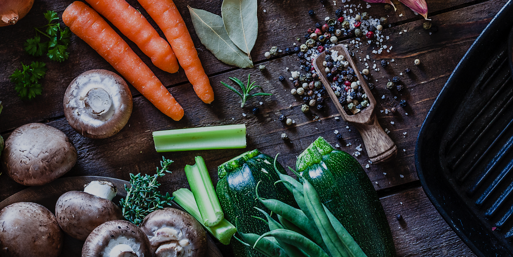

<!--<ion-header>
  <ion-navbar>
    <ion-buttons start>
      <button ion-button menuToggle>
        <ion-icon name="menu"></ion-icon>
      </button>
    </ion-buttons>
    <ion-title>{{ 'SEARCH_TITLE' | translate }}</ion-title>
  </ion-navbar>
</ion-header>-->

<ion-content class="search-page">

  <ion-card>
    
    <div class="card-title">
      <h1>Foodness</h1>
    </div>
  </ion-card>

  <ion-searchbar placeholder="{{ 'SEARCH_PLACEHOLDER' | translate }}"></ion-searchbar>

  <div class="popular-meals">
    <h2>
      Principais escolhas em Lisboa
      <span right>All</span>
    </h2>
    <ion-slides autoplay="500">
      <ion-slide>
          
      </ion-slide>
  
      <ion-slide>
          
      </ion-slide>
  
      <ion-slide>
          
      </ion-slide>
    </ion-slides>
  </div>
  
</ion-content>